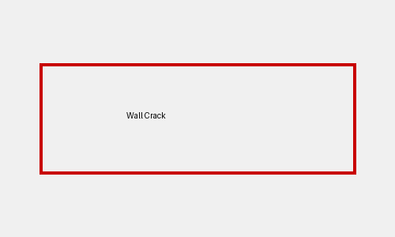

Detailed Diagnostic Report (DDR)
1. Property Issue Summary
{'property_name': 'Green Valley Apartments', 'inspection_date': '10 March 2026', 'inspectors': ['Rahul Sharma', 'Aditi Mehta']}
2. Area-wise Observations
{'living_room': {'visual_inspection': 'Visible structural crack near the window frame, approx. 1.2 meters long', 'thermal_imaging': 'Temperature difference of ~7°C near the crack area, suggesting possible air leakage'}, 'bedroom': {'visual_inspection': 'Moisture patch and peeling paint on ceiling corner, possible water leakage from upper floor', 'thermal_imaging': 'Lower temperature zone detected, indicating moisture accumulation'}, 'kitchen': {'visual_inspection': 'Cabinet wood appears swollen, indicating long-term moisture exposure', 'thermal_imaging': 'No major thermal anomalies detected, moisture presence cannot be confirmed'}}

Page 1 Image

Page 1 Image
3. Probable Root Cause
Not Available
4. Severity Assessment
{'living_room': 'Moderate - possible air leakage and structural crack', 'bedroom': 'High - possible water leakage and moisture accumulation', 'kitchen': 'Moderate - long-term moisture exposure'}
5. Recommended Actions
{'living_room': 'Seal the structural crack and inspect for air leakage', 'bedroom': 'Investigate and repair water leakage source, dry and repaint the ceiling', 'kitchen': 'Inspect and repair moisture source, replace swollen cabinet wood'}
6. Additional Notes
Conflict: Thermal imaging could not confirm moisture presence in the kitchen, while visual inspection suggests long-term moisture exposure.
7. Missing or Unclear Information
Root cause of the issues, detailed repair costs and timelines